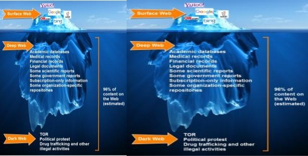
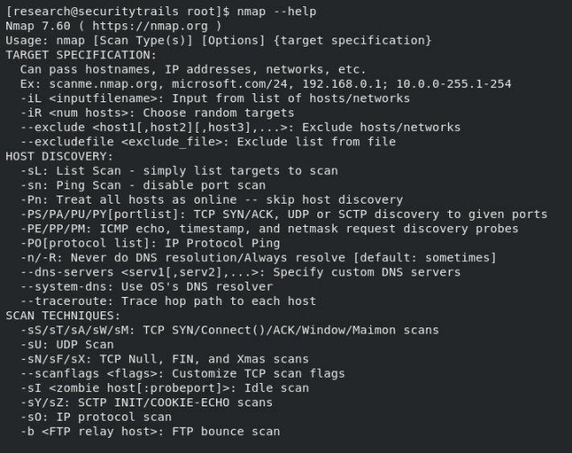
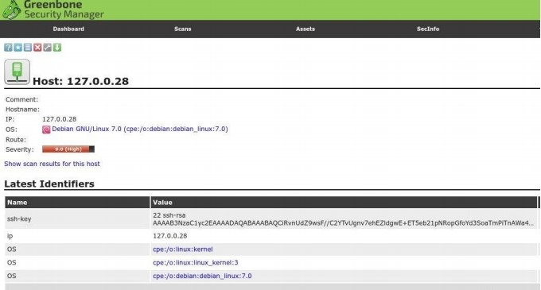

Automated tools now rule the Internet; you can find a few to make your social networks grow, others to answer emails automatically, and even bots to help your online customers. Of course, hacking has evolved too: nowadays you can find a lot of automated OSINT Tools that can help anyone with security research and Intel reconnaissance in a way that just wasn‘t possible twenty years ago.
In past decades, ethical hacking and penetration testing were performed by only a few security experts. Now almost anyone can report security incidents. Ethical hacking tools allow you to scan search and find the flaws and vulnerabilities within any company to help make their systems and applications more secure.
We‘ve compiled some of the most popular penetration testing tools to help you through the first steps of a security investigation. You‘ll find some of the classic tools that seem to have been around forever and some new tools that might not be familiar.
John the Ripper is one of the most popular password crackers of all time. It‘s also one of the best security tools available to test password strength in your operating system, or for auditing one remotely. This password cracker is able to auto-detect the type of encryption used in almost any password, and will change its password test algorithm accordingly, making it one of the most intelligent password cracking tools ever.
This ethical hacking tool uses brute force technology to decipher passwords and algorithms such as:
DES, MD5, Blowfish
Kerberos AFS
Hash LM (Lan Manager), the system used in Windows NT / 2000 / XP / 2003
MD4, LDAP, MySQL (using third-party modules)
Another bonus is that JTR is open source, multi-platform and fully available for Mac, Linux, Windows and Android.
Metasploit is an open source cyber-security project that allows InfoSec professionals to use different penetration testing tools to discover remote software vulnerabilities. It also functions as an exploit module development platform.
One of the most famous results of this project is the Metasploit Framework, written in Ruby, which enables you to develop, test and execute exploits easily. The framework includes a set of security tools that can be used to:
Evade detection systems
Run security vulnerability scans
Execute remote attacks
Enumerate networks and hosts
Metasploit offers three different versions of their software:
Pro: ideal for penetration testing and IT security teams.
Community: used by small companies and InfoSec students.
Framework: the best for app developers and security researchers.
Supported platforms include:
Mac OS X
Linux
Windows
Nmap (Network Mapper) is a free open source security tool used by InfoSec professionals to manage and audit network and OS security for both local and remote hosts.
Despite being one of the oldest security tools in existence (launched in 1997), it continues to be actively updated and receives new improvements every year. It‘s also regarded as one of the most effective network mappers around, known for being fast and for consistently delivering thorough results with any security investigation.
What can you do with Nmap?
Audit device security
Detect open ports on remote hosts
Network mapping and enumeration
Find vulnerabilities inside any network
Launch massive DNS queries against domains and subdomains
Supported platforms include:
Mac OS X
Linux, OpenBSD and Solaris
Microsoft Windows

Wireshark is free open-source software that allows you to analyze network traffic in real time. Thanks to its sniffing technology, Wireshark is widely known for its ability to detect security problems in any network, as well as for its effectiveness in solving general networking problems.
While sniffing the network, you‘re able to intercept and read results in human-readable format, which makes it easier to identify potential problems (such as low latency), threats and vulnerabilities.
Main features:
Saves analysis for offline inspection
Packet browser
Powerful GUI
Rich VoIP analysis
Inspects and decompresses gzip files
Reads other capture files formats including: Sniffer Pro, tcpdump (libpcap), Microsoft network monitor, Cisco Secure IDS iplog, etc.
Supported ports and network devices: Ethernet, IEEE 802.11, PPP/HDLC, ATM, Bluetooth, USB, Token Ring, Frame Relay, FDDI.
Protocol decryption includes but not limited to IPsec, ISAKMP, Kerberos, SNMPv3, SSL/TLS, WEP, and WPA/WPA2
Exports results to XML, PostScript, CSV, or plain text
Wireshark supports up to 2000 different network protocols, and is available on all major operating systems including:
Linux
Windows
Mac OS X
FreeBSD, NetBSD, OpenBSD
OpenVAS (also known as the old classic ―Nessus‖) is an open-source network scanner used to detect remote vulnerabilities in any hosts. One of the best-known network vulnerability scanners, it‘s very popular among system administrators and DevOps and InfoSec professionals.
Main features
Powerful web-based interface
+50,000 network vulnerability tests
Simultaneous multiple host scanning
Able to stop, pause and resume scan tasks
False positive management
Scheduled scans
Graphics and statistics generation
Exports results to plain text, XML, HTML or LateX
Powerful CLI available
Fully integrated with Nagios monitoring software
While it‘s web-based interface allows it to be run from any operating system, a CLI is also available and works well for Linux, UNIX and Windows operating systems. The free version can be downloaded from the OpenVAS website, but there is also a commercial enterprise license available from the Greenbone Security (parent company) website.
If you‘re going to perform ethical hacking, IronWASP is another great tool. It‘s free, open source and multi-platform, perfect for those who need to audit their web servers and public applications.
One of the most appealing things about IronWASP is that you don‘t need to be an expert to manage its main features. It‘s all GUI-based, and full scans can be performed in only a few clicks. So, if you‘re just getting started with ethical hacking tools, this is a great way to start.
Some of its main features include:
Powerful GUI-based interface
Web scan sequence recording
Exports results into HTML and RTF file format
25+ different web vulnerabilities
False positive and negative management
Full Python and Ruby support for its scripting engine
Can be extended by using modules written in C#, Ruby, and Python
Supported platforms: Windows, Linux with Wine, and MacOS using CrossOver
Nikto is another favorite, well-known as part of the Kali Linux Distribution. Other popular Linux distributions such as Fedora already come with Nikto available in their software repositories as well.
This security tool is used to scan web servers and perform different types of tests against the specified remote host. Its clean and simple command line interface makes it really easy to launch any vulnerability testing against your target, as you can see in the following screenshot:

Nikto’s main features include:
Detects default installation files on any OS
Detects outdated software applications.
Runs XSS vulnerability tests
Launches dictionary-based brute force attacks
Exports results into plain text, CSV or HTML files
Intrusion detection system evasion with LibWhisker
Integration with Metasploit Framework
sqlmap is a cool cyber-security tool written in Python that helps security researchers to launch SQL code injection tests against remote hosts. With SQLMap you can detect and test different types of SQL-based vulnerabilities to harden your apps and servers, or to report vulnerabilities to different companies.
Its SQL injection techniques include:
UNION query-based
time-based blind
boolean-based blind
error-based
stacked queries
out-of-band
Main features:
Multiple database server support: Oracle, PostgreSQL, MySQL and MSSQL, MS Access, DB2 or Informix.
Automatic code injection capabilities
Password hash recognition
Dictionary-based password cracking
User enumeration
Get password hashes
View user privileges and databases
Database user privilege escalation
Dump table information
Executes remote SQL SELECTS
Check out the next video to see the true power of SQLMap using the sqlmap out-of-band injection working with Metasploit integration against Microsoft SQL Server:
SQLNinja is another SQL vulnerability scanner bundled with Kali Linux distribution. This tool is dedicated to target and exploit web apps that use MS SQL Server as the backend database server. Written in Perl, SQLNinja is available in multiple UNIX distros where the Perl interpreter is installed, including:
Linux
Mac OS X & iOS
FreeBSD
SQLninja can be run in different types of modes such as:
Test mode
Verbose mode
Fingerprint remote database mode
Brute force attack with a word list
Direct shell & reverse shell
Scanner for outbound ports
Reverse ICMP Shell
DNS tunnelled shell
Wapiti is a free open-source command-line based vulnerability scanner written in Python. While it‘s not the most popular tool in this field, it does a good job of finding security flaws in many web applications.
Using Wapiti can help you to discover security holes including:
XSS attacks
SQL injections
XPath injections
XXE injections
CRLF injections
Server side request forgery
Other features include:
Runs in verbose mode
Ability to pause and resume scans.
Highlights vulnerabilities found inside the terminal
Generates reports and export into HTML, XML, JSON and TXT
Activates and deactivates multiple attack modules
Removes parameters from certain URLs
Excludes URLs during an attack
Bypasses SSL certificate verification
URL extractor from javascript
Timeout configuration for large scans
Sets custom user-agent and HTTP headers
Maltego is the perfect tool for Intel gathering and data reconnaissance while you‘re performing the first analysis of your target.
In this case, it can be used to correlate and determine relationships between people, names, phone numbers, email addresses, companies, organizations and social network profiles.
Along with online resources like Who is data, DNS records, social networks, search engines, geolocation services and online API services it can also be used to investigate the correlation between internet-based infrastructures including:
Domain names
DNS servers
Netblocks
IP addresses
Files
Web Pages
Main features include:
GUI-based interface
Analyzes up to 10.000 entities per graph
Extended correlation capabilities
Data sharing in real time
Correlated data graphics generator
Exports graphs to GraphML
Generates entity lists
Can copy and paste information
This application is available for Windows, Linux, and Mac OS, and the only software requirement is to have Java 1.8 or greater installed.
AirCrack-ng is a respected Wi-Fi security suite for home and corporate security investigations. It includes full support for 802.11 WEP and WPA-PSK networks and works by capturing network packets. It then analyzes and uses them to crack Wi-Fi access.
For old-school security professionals, AirCrack-ng includes a fancy terminal-based interface along with a few more interesting features.
Main features:
Extensive documentation (wiki, manpages)
Active community (forums and IRC channels)
Support for Linux, Mac and Windows Wi-Fi detection
Launches PTW, WEP and Fragmentation attacks
Supports WPA Migration Mode
Fast cracking speed
Multiple Wi-Fi card support
Integration with 3rd party tools
As a bonus, it comes bundled with a lot of Wi-Fi auditing tools including:
airbase-ng
aircrack-ng
airdecap-ng
airdecloak-ng
airdriver-ng
aireplay-ng
airmon-ng
airodump-ng
airolib-ng
airserv-ng
airtun-ng
easside-ng
packetforge-ng
tkiptun-ng
wesside-ng
airdecloak-ng

Reaver is a great open-source alternative to Aircrack-ng that allows you to audit the security of any Wi-Fi with WPA/WPA2 pass keys. It uses brute force Wi-Fi attack techniques like Pixie dust attacks to crack Wi-Fi-protected setups through common Wi-Fi flaws and vulnerabilities. Depending on how well-configured the router-level Wi-Fi security is, it can take between 3 to 10 hours to gets an effective brute-force cracking result.
Until recently, the original Reaver version was hosted at Google Cloud. After the release version of version 1.6,a forked community edition was launched in Github.
Build-time dependencies
build-essential
libpcap-dev
Runtime-time dependencies
pixiewps (required for pixiedust attack)
It runs well on most Linux distributions.
Ettercap is a network interceptor and packet sniffer for LAN networks. It supports active and passive scans as well as various protocols, including encrypted ones such as SSH and HTTPS.
Other capabilities include network and host analysis (like OS fingerprint), as well as network manipulation over established connections -- which makes this tool great for testing man-in-the-middle attacks.
Main features
Active and passive protocol analysis
Filters based on IP source and destination, Mac and ARP addresses
Data injection into established connections
SSH and HTTPS encryption-based protocols
Sniffs remote traffic over GRE tunnel
Extensible with plugins
Protocol supports include Telnet, FTP, Imap, Smb, MySQL, LDAP, NFS, SNMP, HTTP, etc.
Determines OS name and version
Able to kill established LAN connections
DNS Hijacking
Canvas is a great alternative to Metasploit, offering more than 800 exploits for testing remote networks.
Main features
Remote network exploitation
Targets different kind of systems
Targets selected geographic regions
Takes screenshots of remote systems
Downloads passwords
Modifies files inside the system
Escalates privileges to gain administrator access
This tool also lets you use its platform to write new exploits or use its famous shellcode generator. It also integrates an alternative to nmap called scanrand, which is especially useful for port scanning and host discovery over mid to large networks.
Supported platforms include:
Linux
MacOSX (requires PyGTK)
Windows (requires Python and PyGTK)